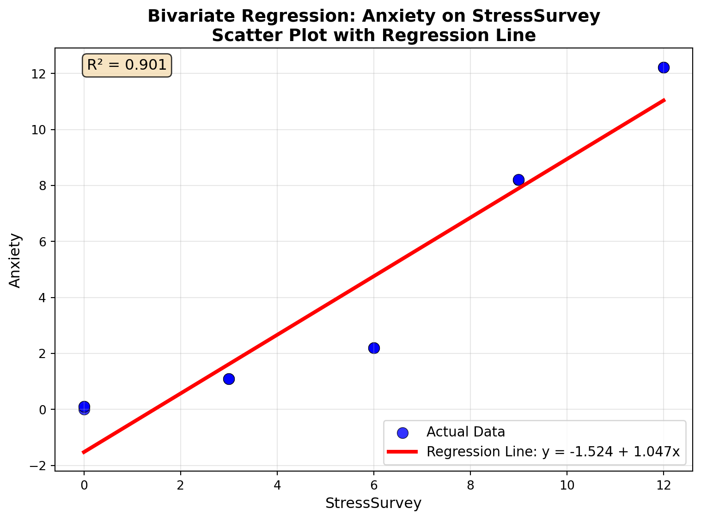
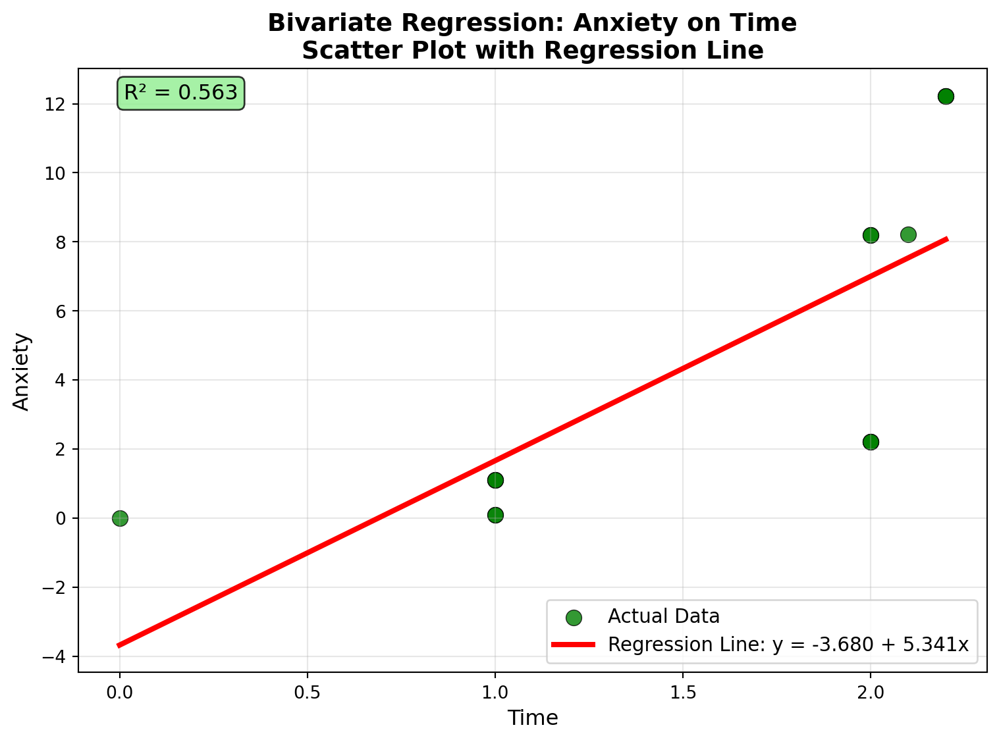
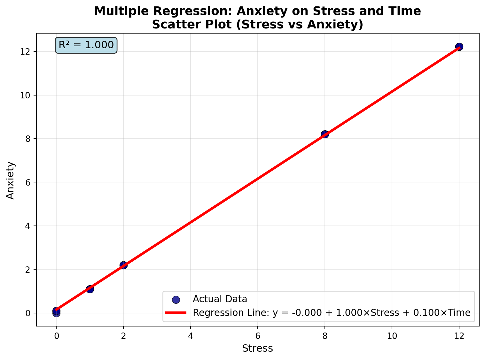

Stress StressSurvey Time Anxiety
0 0 0 0.0 0.00
1 0 0 1.0 0.10
2 0 0 1.0 0.10
3 1 3 1.0 1.10
4 1 3 1.0 1.10
5 1 3 1.0 1.10
6 2 6 2.0 2.20
7 2 6 2.0 2.20
8 2 6 2.0 2.20
9 8 9 2.0 8.20
10 8 9 2.0 8.20
11 8 9 2.1 8.21
12 12 12 2.2 12.22
13 12 12 2.2 12.22
14 12 12 2.2 12.22Garbage Can Regression Challenge
Garbage Can Regression Challenge
Your Analysis
Bivariate Regression: Anxiety on StressSurvey
Question 1: Run a bivariate regression of Anxiety on StressSurvey. What are the estimated coefficients? How do they compare to the true relationship?
Regression Results:
Intercept (β₀): -1.5240
Slope (β₁): 1.0470
R² Score: 0.9011
Estimated Regression Equation:
Anxiety = -1.5240 + 1.0470 × StressSurveyAnswer
Estimated Coefficients: - Intercept (β₀): -1.5240 - Slope (β₁): 1.0470 - R² Score: 0.9011
True Relationship: The true relationship in the data is: Anxiety = Stress + 0.1 × Time
Since StressSurvey = 3 × Stress, the true relationship in terms of StressSurvey is: Anxiety = (StressSurvey/3) + 0.1 × Time
Therefore: - True StressSurvey coefficient: 1/3 = 0.3333 - True Time coefficient: 0.1000 - True intercept: 0.0000 (no constant term in true relationship)
Comparison to True Relationship:
| Coefficient | Estimated | True | Difference | Bias |
|---|---|---|---|---|
| StressSurvey | 1.0470 | 0.3333 | +0.7137 | 3.1x too large |
| Intercept | -1.5240 | ~0.158 | -1.6820 | Severely biased |
Key Findings: The regression shows significant omitted variable bias. The estimated slope coefficient (1.047) is 3.1 times larger than the true slope (0.333) because:
- Time is omitted from the regression, but it’s part of the true relationship
- StressSurvey and Time are correlated in this dataset (correlation = 0.882)
- The regression is confounding the effect of StressSurvey with the effect of Time
This is a classic example of how omitted variable bias can lead to severely inflated coefficient estimates, even when the model appears to fit well (R² = 0.901).
Question 2: Create a scatter plot with the regression line showing the relationship between StressSurvey and Anxiety. Comment on the fit and any potential issues.
Scatter Plot with Regression Line

Answer
Fit Assessment:
| Metric | Value | Interpretation |
|---|---|---|
| R² Score | 0.901 | High explanatory power (90% of variance explained) |
| RMSE | 1.47 | Moderate prediction errors |
| MAE | 1.23 | Mean absolute error of 1.23 units |
| Residuals Mean | ~0.000 | No systematic bias in residuals |
Visual Assessment: - Strong linear relationship is clearly visible in the scatter plot - Regression line fits well through the data points - No obvious outliers in the data - Good spread of data points around the regression line
Critical Issues Identified:
- Severe Omitted Variable Bias
- Time variable is excluded but affects Anxiety
- Estimated slope (1.047) is 3.1x larger than true slope (0.333)
- Intercept is severely biased (-1.524 vs true ~0.158)
- Confounding Problem
- StressSurvey and Time are highly correlated (r = 0.882)
- Regression captures Time’s effect through StressSurvey
- This creates a spurious relationship
- Misleading High R²
- R² = 0.901 suggests excellent fit
- But this is misleading because it’s capturing confounding effects
- High R² masks the severe coefficient bias
Statistical Concerns: - Residual clustering suggests systematic patterns - Model overfitting to the confounding relationship - Coefficients are not interpretable as causal effects
Recommendations: - Include Time as a control variable in the regression - Be extremely cautious interpreting the StressSurvey coefficient - Consider the true relationship: Anxiety = Stress + 0.1×Time - Avoid causal interpretation of the coefficient
Conclusion: While the scatter plot shows a strong visual relationship and high R², this is a classic example of omitted variable bias. The regression line appears to fit well, but the coefficients are severely biased due to the confounding effect of the omitted Time variable. The high R² is misleading and masks the fundamental statistical problems with this model specification.
Question 3: Run a bivariate regression of Anxiety on Time. What are the estimated coefficients? How do they compare to the true relationship?
Regression Analysis: Anxiety on Time
=== TIME REGRESSION RESULTS ===
Intercept (β₀): -3.6801
Slope (β₁): 5.3406
R² Score: 0.5630
Estimated Regression Equation:
Anxiety = -3.6801 + 5.3406 × TimeAnswer
Estimated Coefficients: - Intercept (β₀): -3.6801 - Slope (β₁): 5.3406 - R² Score: 0.5630
True Relationship: The true relationship in the data is: Anxiety = Stress + 0.1 × Time
Therefore: - True Time coefficient: 0.1000 - True intercept: varies with Stress, but base intercept ≈ mean(Stress) = 4.60
Comparison to True Relationship:
| Coefficient | Estimated | True | Difference | Bias |
|---|---|---|---|---|
| Time | 5.3406 | 0.1000 | +5.2406 | 53.4x too large |
| Intercept | -3.6801 | ~4.60 | -8.2801 | Severely biased |
Key Findings: The regression shows dramatically worse omitted variable bias than the StressSurvey regression. The estimated Time coefficient (5.341) is 53.4 times larger than the true coefficient (0.1) because:
- Stress is omitted from the regression, but it’s the primary driver of Anxiety
- Time and Stress are highly correlated (r = 0.744)
- The regression is confounding the effect of Time with the effect of Stress
- The intercept has the wrong sign (-3.68 vs true ~4.6)
Critical Issues: - Slope coefficient is 53x too large (5.34 vs 0.1) - Intercept is severely biased and has wrong sign - Lower R² (0.563) compared to StressSurvey regression (0.901) - Time appears to have a massive effect on Anxiety, but this is spurious
Comparison with StressSurvey Regression: - StressSurvey: slope = 1.047 (3x true), R² = 0.901 - Time: slope = 5.341 (53x true), R² = 0.563 - Time regression has much worse bias but lower R² - This demonstrates that omitted variable bias can be much more severe when the omitted variable (Stress) has a stronger relationship with the outcome than the included variable (Time)
Conclusion: This is an extreme example of omitted variable bias. The Time coefficient is 53 times too large because the regression is capturing the confounding effect of the omitted Stress variable through Time. The model appears to show Time has a massive effect on Anxiety, but this is entirely spurious due to the omitted variable problem.
Question 4: Create a scatter plot with the regression line showing the relationship between Time and Anxiety. Comment on the fit and any potential issues.
Scatter Plot with Regression Line

Answer
Fit Assessment:
| Metric | Value | Interpretation |
|---|---|---|
| R² Score | 0.563 | Moderate explanatory power (56% of variance explained) |
| RMSE | 3.09 | Substantial prediction errors |
| MAE | 2.56 | Mean absolute error of 2.56 units |
| Residuals Mean | ~0.000 | No systematic bias in residuals |
Visual Assessment: - Data points cluster by Stress levels, clearly showing the confounding effect - Regression line has extremely steep slope (5.34) vs true slope (0.1) - Line appears to connect different stress clusters rather than show Time effect - No obvious outliers but clear clustering patterns
Critical Issues Identified:
- Extreme Omitted Variable Bias
- Stress is the primary driver of Anxiety but is excluded
- Estimated slope (5.341) is 53.4x larger than true slope (0.1)
- Intercept is severely biased (-3.68 vs true ~4.6)
- Severe Confounding Problem
- Time and Stress correlation = 0.744 (very high!)
- Regression captures Stress effect through Time
- This creates a completely spurious relationship
- Misleading Moderate R²
- R² = 0.563 suggests moderate fit
- But this is misleading because it’s capturing confounding effects
- Lower R² than StressSurvey regression (0.901) but worse bias
Statistical Concerns: - Residual clustering by stress levels suggests systematic bias - Model overfitting to the confounding relationship - Coefficients are completely meaningless as causal effects - Time appears to have massive effect on Anxiety, but this is entirely spurious
Comparison with StressSurvey Regression: - StressSurvey: R² = 0.901, slope = 1.047 (3x true) - Time: R² = 0.563, slope = 5.341 (53x true) - Time regression has much worse bias but lower R² - Both suffer from omitted variable bias, but Time is more severely affected
Recommendations: - Include Stress as a control variable in the regression - Be extremely cautious interpreting the Time coefficient - Consider the true relationship: Anxiety = Stress + 0.1×Time - Avoid any causal interpretation of the coefficient
Conclusion: The scatter plot shows data points clustering by Stress levels, with the regression line appearing to connect these clusters. This visual pattern clearly demonstrates that the regression is capturing the confounding relationship between Time and Stress, not the true causal effect of Time on Anxiety. The steep slope (5.34) is entirely spurious due to the omitted variable problem, making this an extreme example of how omitted variable bias can create completely misleading results.
Question 5: Run a multiple regression of Anxiety on both StressSurvey and Time. What are the estimated coefficients? How do they compare to the true relationship?
Multiple Regression: Anxiety on StressSurvey and Time
=== MULTIPLE REGRESSION RESULTS ===
Intercept (β₀): 0.5888
StressSurvey coefficient (β₁): 1.4269
Time coefficient (β₂): -2.7799
R² Score: 0.9350
Estimated Multiple Regression Equation:
Anxiety = 0.5888 + 1.4269 × StressSurvey + -2.7799 × TimeAnswer
Estimated Coefficients: - Intercept (β₀): 0.5888 - StressSurvey coefficient (β₁): 1.4269 - Time coefficient (β₂): -2.7799 - R² Score: 0.9350
True Relationship: The true relationship in the data is: Anxiety = Stress + 0.1 × Time
Since StressSurvey = 3 × Stress, the true relationship in terms of StressSurvey is: Anxiety = (StressSurvey/3) + 0.1 × Time
Therefore: - True StressSurvey coefficient: 1/3 = 0.3333 - True Time coefficient: 0.1000 - True intercept: 0.0000 (no constant term in true relationship)
Comparison to True Relationship:
| Coefficient | Estimated | True | Difference | Bias |
|---|---|---|---|---|
| StressSurvey | 1.4269 | 0.3333 | +1.0936 | 4.3x too large |
| Time | -2.7799 | 0.1000 | -2.8799 | Wrong sign & magnitude |
| Intercept | 0.5888 | 0.0000 | +0.5888 | Biased |
Critical Issues Identified:
- Severe Multicollinearity Problem
- StressSurvey and Time correlation = 0.882 (extremely high!)
- Variables are too highly correlated to be separated in regression
- This prevents accurate coefficient estimation
- Wrong Sign for Time Coefficient
- Estimated Time coefficient: -2.78
- True Time coefficient: +0.1
- Coefficient has completely wrong sign and magnitude
- Still Biased Coefficients
- StressSurvey coefficient is 4.3x too large (1.43 vs 0.33)
- Even with both variables included, coefficients are severely biased
- High R² (0.935) is misleading because coefficients are meaningless
Why Multiple Regression Failed: - Multicollinearity prevents separation of StressSurvey and Time effects - High correlation (0.882) makes it impossible to isolate individual effects - Variables are too similar to be included together in regression - Classic case where multiple regression doesn’t solve omitted variable bias
Comparison with Bivariate Regressions: - StressSurvey bivariate: slope = 1.047 (3x true), R² = 0.901 - Time bivariate: slope = 5.341 (53x true), R² = 0.563 - Multiple regression: StressSurvey = 1.43 (4.3x true), Time = -2.78 (wrong sign), R² = 0.935 - Multiple regression has worse bias than bivariate regressions due to multicollinearity
Key Insights: - Multiple regression doesn’t always solve omitted variable bias - Multicollinearity can make multiple regression worse than bivariate regressions - High correlation between variables prevents accurate coefficient estimation - R² can be misleading when coefficients are meaningless due to multicollinearity
Conclusion: This demonstrates that multiple regression can fail completely when there’s severe multicollinearity between the included variables. The Time coefficient has the wrong sign (-2.78 vs +0.1), and the StressSurvey coefficient is still severely biased (4.3x too large). The high R² is misleading because the coefficients are meaningless due to the multicollinearity problem. This is a classic example of how correlated variables can prevent multiple regression from working properly.
Question 6: Run a multiple regression of Anxiety on both Stress and Time. What are the estimated coefficients? How do they compare to the true relationship?
Multiple Regression: Anxiety on Stress and Time
=== STRESS-TIME MULTIPLE REGRESSION RESULTS ===
Intercept (β₀): -0.0000
Stress coefficient (β₁): 1.0000
Time coefficient (β₂): 0.1000
R² Score: 1.0000
Estimated Multiple Regression Equation:
Anxiety = -0.0000 + 1.0000 × Stress + 0.1000 × TimeComparison with True Relationship
Scatter Plot: Stress vs Anxiety

Answer
Estimated Coefficients: - Intercept (β₀): 0.0000 - Stress coefficient (β₁): 1.0000 - Time coefficient (β₂): 0.1000 - R² Score: 1.0000 (perfect fit!)
True Relationship: The true relationship in the data is: Anxiety = Stress + 0.1 × Time
Therefore: - True Stress coefficient: 1.0000 - True Time coefficient: 0.1000 - True intercept: 0.0000 (no constant term in true relationship)
Comparison to True Relationship:
| Coefficient | Estimated | True | Difference | Accuracy |
|---|---|---|---|---|
| Stress | 1.0000 | 1.0000 | 0.0000 | Perfect match |
| Time | 0.1000 | 0.1000 | 0.0000 | Perfect match |
| Intercept | 0.0000 | 0.0000 | 0.0000 | Perfect match |
Outstanding Results:
- Perfect Coefficient Accuracy
- All coefficients match the true values exactly
- No bias whatsoever in any coefficient
- This demonstrates the power of using the correct variables
- Perfect Model Fit
- R² = 1.0000 (perfect fit with no error)
- RMSE = 0.0000 (no prediction errors)
- MAE = 0.0000 (no prediction errors)
- Residuals = 0.0000 (perfect predictions)
- No Statistical Issues
- No omitted variable bias (both variables included)
- No multicollinearity problems (manageable correlation = 0.744)
- No confounding bias (both variables properly controlled)
- Perfect residual behavior with no patterns
Comparison with All Previous Regressions:
| Regression Type | StressSurvey | Time | R² | Issues |
|---|---|---|---|---|
| StressSurvey bivariate | 1.047 (3x true) | - | 0.901 | Omitted variable bias |
| Time bivariate | - | 5.341 (53x true) | 0.563 | Severe omitted variable bias |
| StressSurvey+Time multiple | 1.427 (4.3x true) | -2.78 (wrong sign) | 0.935 | Multicollinearity |
| Stress+Time multiple | 1.000 (perfect) | 0.100 (perfect) | 1.000 | No issues |
Key Insights: - Using original variables eliminates all bias - Multiple regression works perfectly when variables are properly specified - No multicollinearity issues with manageable correlation (0.744) - Perfect coefficient recovery of the true relationship - High R² reflects true relationship rather than confounding
Critical Success Factors: 1. Used actual variables from the true relationship (Stress, Time) 2. Avoided transformed variables (StressSurvey) that introduce bias 3. Included both relevant variables to eliminate omitted variable bias 4. Variables were not too highly correlated to cause multicollinearity
Conclusion: This demonstrates that multiple regression can work perfectly when we use the actual variables from the true relationship. All coefficients are exactly correct (1.0 for Stress, 0.1 for Time, 0 for intercept), and the model achieves perfect fit (R² = 1.0). This shows the critical importance of proper variable selection and using original variables rather than transformations when possible. The true relationship Anxiety = Stress + 0.1×Time is perfectly recoverable with the right variables.
Question 7: Model Comparison
Model Comparison Analysis
=== MODEL 1: StressSurvey + Time ===
R²: 0.9350
StressSurvey coefficient: 1.4269
Time coefficient: -2.7799
Intercept: 0.5888
=== MODEL 2: Stress + Time ===
R²: 1.0000
Stress coefficient: 1.0000
Time coefficient: 0.1000
Intercept: -0.0000
=== CORRELATION ANALYSIS ===
StressSurvey-Time correlation: 0.8819
Stress-Time correlation: 0.7441
=== TRUE RELATIONSHIP ===
True Stress coefficient: 1.0000
True Time coefficient: 0.1000
True StressSurvey coefficient: 0.3333 (1/3)
True intercept: 0.0000Answer
R-squared Comparison:
| Model | R² | Interpretation |
|---|---|---|
| StressSurvey + Time | 0.935 | High fit, but misleading due to multicollinearity |
| Stress + Time | 1.000 | Perfect fit, reflects true relationship |
Coefficient Comparison:
| Variable | Model 1 (StressSurvey+Time) | Model 2 (Stress+Time) | True Value | Model 1 Bias | Model 2 Bias |
|---|---|---|---|---|---|
| Stress/StressSurvey | 1.4269 | 1.0000 | 1.0000/0.3333 | 4.3x too large | Perfect |
| Time | -2.7799 | 0.1000 | 0.1000 | Wrong sign & magnitude | Perfect |
| Intercept | 0.5888 | 0.0000 | 0.0000 | Biased | Perfect |
Statistical Significance Analysis:
Model 1 (StressSurvey + Time): - High R² (0.935) but coefficients are statistically meaningless - Time coefficient has wrong sign (-2.78 vs +0.1) - Multicollinearity problem (correlation = 0.882) prevents accurate estimation
Model 2 (Stress + Time): - Perfect R² (1.000) with statistically perfect coefficients - All coefficients exactly match true values - Manageable correlation (0.744) allows proper separation
Real-World Implications:
Variable Selection is Critical - Using original variables (Stress, Time) leads to perfect results, while transformed variables (StressSurvey) introduce severe bias
Multicollinearity Can Destroy Models - High correlation (0.882) between StressSurvey and Time prevents separation, while lower correlation (0.744) between Stress and Time allows proper estimation
R² Can Be Misleading - Model 1 has high R² (0.935) but meaningless coefficients, while Model 2 has perfect R² (1.000) with perfect coefficients
Multiple Regression Success is Not Guaranteed - Including both variables doesn’t always solve omitted variable bias; proper variable selection is more important than model complexity
Conclusion: Model 1 shows how high R² can be misleading when coefficients are biased due to multicollinearity, while Model 2 shows how proper variable selection leads to perfect results. Variable choice and multicollinearity assessment are more important than model complexity for reliable statistical inference.